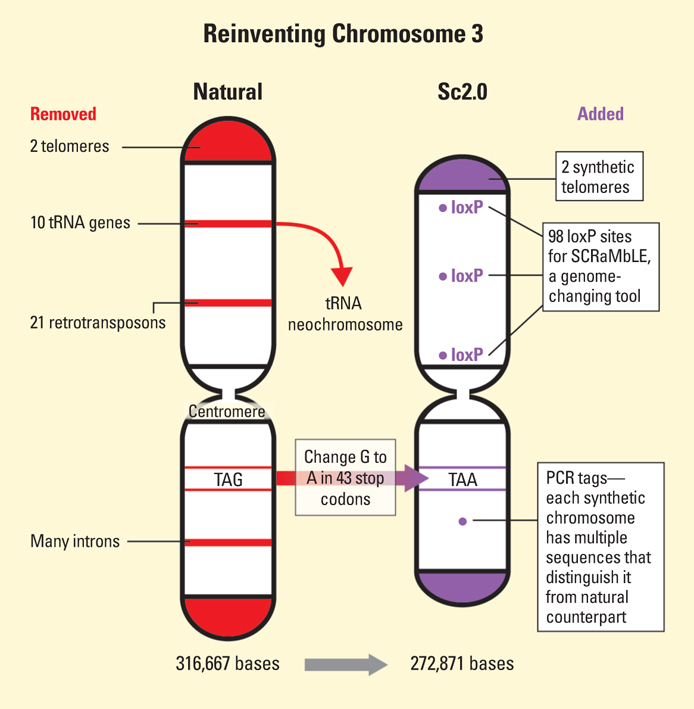
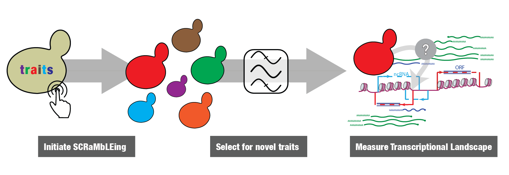

Transcription in a SCRaMbLEd genome
Follow along on 
bit.ly/2fKpAbO
Why are genomes organized as we observe them?
"A big step towards an artificial yeast genome"

"Remodeling the yeast genome piece by piece"

Synthetic Yeast Genome Project (Sc2.0) Science Special Issue
International consortium for design and synthesis

...synthesis is ongoing...
Encode sequence diversity by design: Sc2.0
Gene shuffling with SCRaMbLE
Synthetic Chromosome Recombination and Modification by LoxP-mediated Evolution
How is the transcriptional landscape modified by genome SCRaMbLEing?
What is the sequence of a SCRaMbLEd genome?
 Andreas
Andreas
64 strains derived from SCRaMbLE of SynIXR

Each genome segment identified by color and number. ~1 gene per segment. SCRaMbLEgram
Extensive heterogeneity among SCRaMbLE strains

Many genomes cannot be assembled fully with short reads
JS734 has four potential solutions
Workflow for de novo assembly with long-reads
Parental strain (JS94) can be solved with single SMRT cell

Near complete assembly of SCRaMbLE genomes with long-reads
**JS734 could only be solved by aggregating data from several SMRT cells**

-
Is it possible to solve every SCRaMbLE genome?
-
If so, under what conditions (e.g. coverage, read-length)?
Complete assembly achieved frequently at high coverage for JS734

Some SCRaMbLE genomes are full of inverted repeats
Will increased coverage still lead to complete assembly?
Increased coverage doesn't guarantee resolution of more complicated genomes

Some strains require a combination of depth and increased read length
Nanopore sequencing + ultralong reads = reference quality assembly?

Jain et al. 2017 bioRxiv and Blog post: "Assembling the Cliveome"

How is a SCRaMbLEd genome transcribed?
Andreas
Transcription is linked to genome architecture

How is the transcriptional landscape modified by genome SCRaMbLEing?
Sequencing methods to measure changes in transcriptome

3'-end profiles change after SCRaMbLE
Genome-wide 3'-end variation?
Kernel PCA (Cosine kernel) from 22 segments represented in all strains